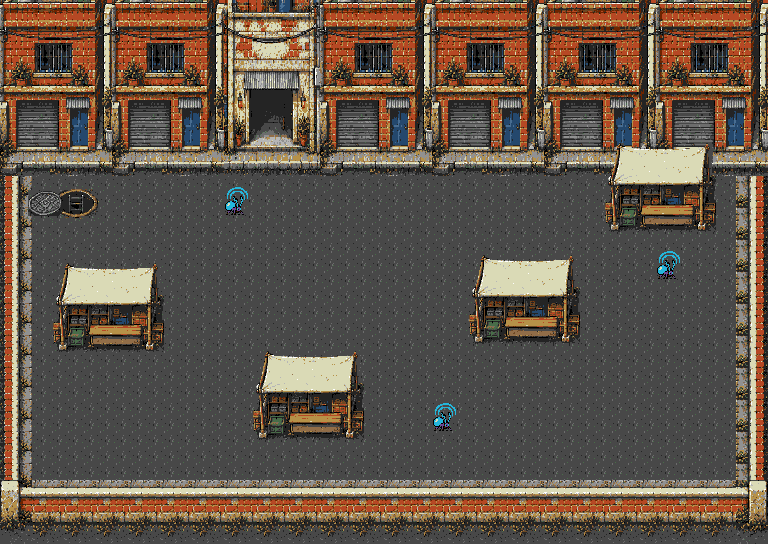

Fase 8 · Feira urbana comprometida
O mesmo cenário urbano atual da fase 7: asfalto, bueiro de saída dos esgotos, fachadas encostadas e quatro tendas de lona branca. A tenda superior mantém o deslocamento de 56 px para baixo. Os insetos comprometeram a base; destrua os três emissores para reduzir a chegada de reforços.
Acesso: FASE TESTE → Campanha → 8.
Mundo: 768×544 pxCampo: 304 px na verticalObjetivo: 3 emissoresInimigos: máximo 6Reserva: 636/640 tiles
Composição completa
Fundo idêntico, pixel a pixel, à fase 7 e compartilhado na ROM. As cargas foram substituídas pelos três alvos: próximo ao bueiro, na parte inferior do mercado e na rua à direita. Os quatro obstáculos e as rotas de contorno permanecem. As mortes dos emissores continuam reduzindo a frequência das ondas, de 2 para 4, 6 e 8 segundos.

Composição nativa com um quadro representativo dos emissores; as capturas abaixo mostram a ROM em execução.
Capturas no jogo
 Emissor 1 · captura da ROM em NTSC
Emissor 1 · captura da ROM em NTSC Emissor 2 · captura da ROM em NTSC
Emissor 2 · captura da ROM em NTSC Emissor 3 · captura da ROM em NTSC
Emissor 3 · captura da ROM em NTSCMemória e validação
O banco de 978 padrões e o mapa de 13.056 bytes são compartilhados com a fase 7, sem duplicar o cenário na ROM. Cache de 560 tiles mais 76 tiles dos emissores: 636/640 tiles, 20.352 bytes residentes. Heap do cache: 6.436 bytes. As seis poses originais foram preservadas, agrupando faixas idênticas de 8×16 px; não há envio de novos tiles para animá-las. Cada emissor usa até 8 faixas, com descarte antes do desenho quando está fora da câmera.
Passaram em NTSC/PAL: reconstrução exata do cenário, faixas dos sprites visíveis na SAT, rolagem horizontal e vertical, quatro colisões, limites, pausa e destruição dos três alvos com disparos por controle. As 2.561 posições livres da malha estão conectadas. Fase 7, salas 13A/13B e os 19 acessos da seleção também passaram.
Há quedas sob carga em NTSC. Seis inimigos e 6+6 tiros, 20 s por trecho; IA e trajetórias ativas. Vida protegida e reposição dos tiros inativos. A meta de 60 FPS fixos não foi atingida. PAL manteve 50 FPS nesses trechos.
| Trecho | NTSC · FPS | PAL · FPS |
|---|
| Parte superior | 60.00 | 50.00 |
| Mercado | 46.40 | 50.00 |
| Parte inferior | 52.50 | 50.00 |
A prova de conclusão isola reforços e tiros de retorno antes do percurso; depois usa somente controles. Combate natural foi amostrado separadamente por até 30 s. Dificuldade humana e hardware físico não certificados.
ROM verificada: 5f443b87a621026298538b705b59051d6cfce2bc71c9904db61c5ac45b5280be